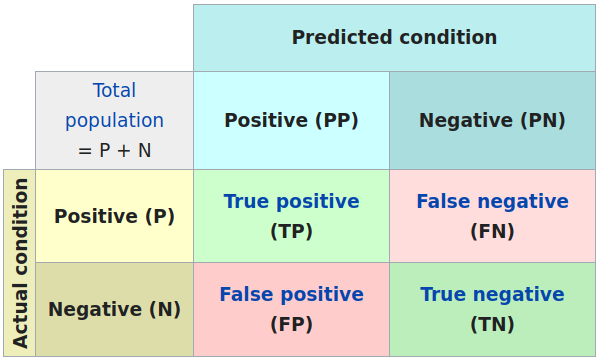
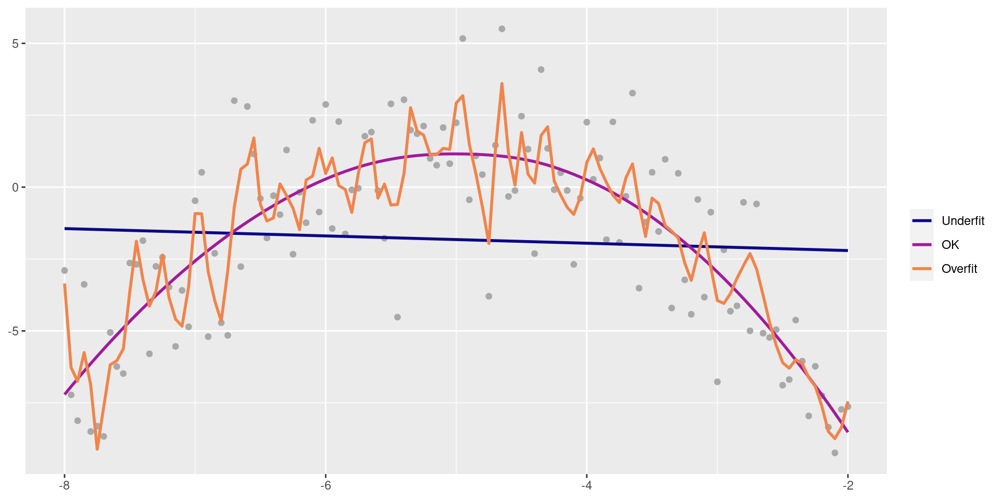
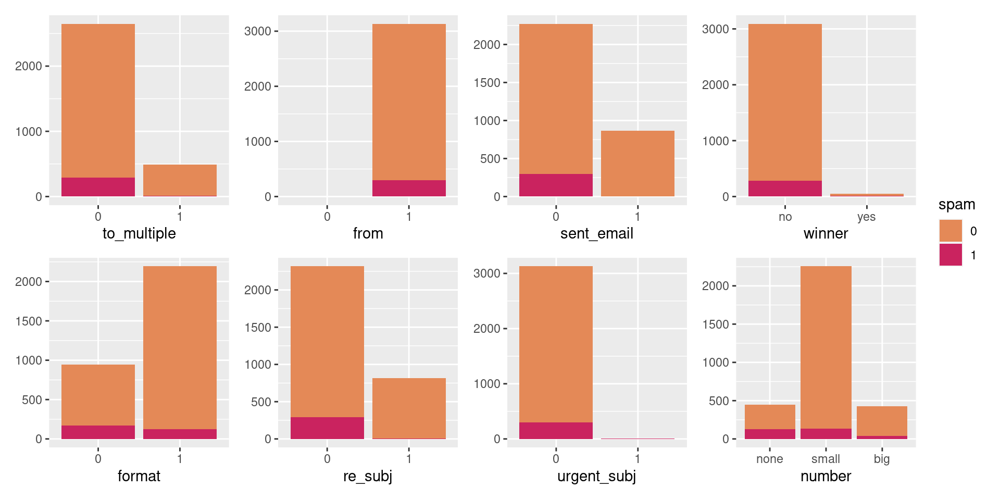
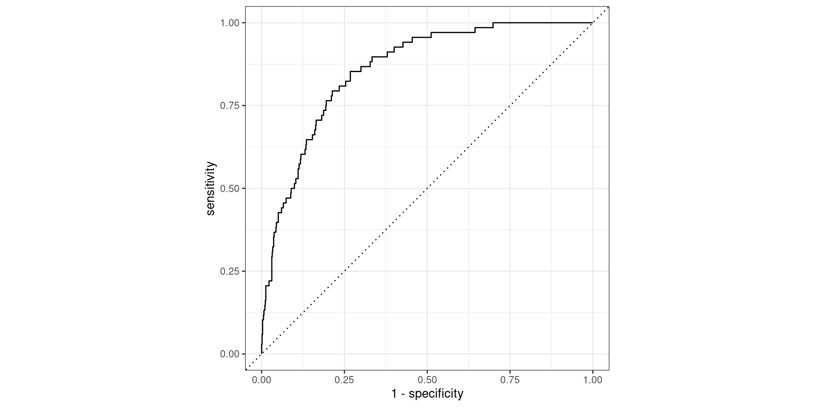
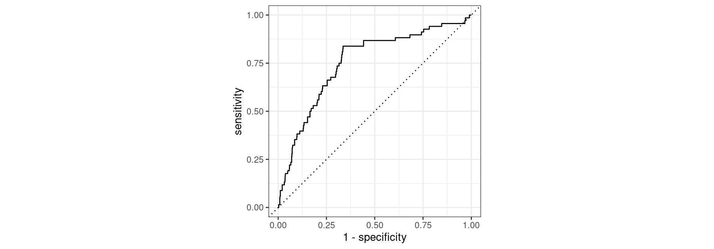

| gndr_f | has_kids | gndr_f_x_has_kids |
|---|---|---|
| 0 | 1 | 0 |
| 1 | 0 | 0 |
| 1 | 1 | 1 |
| 0 | 0 | 0 |
W#9 Classification Problems, Logisitc Regression, Prediction
Jan Lorenz
Recap: Linear Models
Recap linear models
We had linear models \(y_i = \beta_0 + \beta_1x_1 + \dots + \beta_nx_n\) with
Response (dependent) variable \(y\): Numeric
Predictor (independent) variables \(x_1,\dots,x_n\): Numeric or Binary (0 or 1)
- When a variable is categorical: We dummify it to \(m-1\) binary (dummy) variables (\(m\) is the number of categories)
- Note: In computer science dummifying is called one-hot encoding.
- When a variable has ordered categories (ordinal level of measurement): We may transform to a numerical variable assuming comparison of numerical distances between categories are interpretable.
Recap: Interaction effects
Adding products of variables in the linear model \(y_i = \beta_0 + \beta_1x_1 + \beta_2x_2 + \beta_{3}x_1x_2 + \dots\).
For \(x_1\) and \(x_2\) being dummy variables this is for example
Check:
- What are the reference categories? Being male without kids.
- Estimating model on life satisfaction. How would we see if being a mother/father increases life satisfaction more? positiv/negative coefficient
gndr_f_x_has_kids
Predicting Categorical Data
Large part of the content adapted from http://datasciencebox.org.
What if response is binary?
- Example: Spam filter for emails
Rows: 3,921
Columns: 21
$ spam <fct> 0, 0, 0, 0, 0, 0, 0, 0, 0, 0, 0, 0, 0, 0, 0, 0, 0, 0, 0, …
$ to_multiple <fct> 0, 0, 0, 0, 0, 0, 1, 1, 0, 0, 0, 0, 0, 0, 0, 0, 0, 0, 0, …
$ from <fct> 1, 1, 1, 1, 1, 1, 1, 1, 1, 1, 1, 1, 1, 1, 1, 1, 1, 1, 1, …
$ cc <int> 0, 0, 0, 0, 0, 0, 0, 1, 0, 0, 0, 1, 0, 1, 2, 1, 0, 2, 0, …
$ sent_email <fct> 0, 0, 0, 0, 0, 0, 1, 1, 0, 0, 1, 0, 0, 1, 0, 1, 0, 0, 1, …
$ time <dttm> 2012-01-01 07:16:41, 2012-01-01 08:03:59, 2012-01-01 17:…
$ image <dbl> 0, 0, 0, 0, 0, 0, 0, 1, 0, 0, 0, 0, 0, 0, 0, 0, 0, 0, 0, …
$ attach <dbl> 0, 0, 0, 0, 0, 0, 0, 1, 0, 0, 0, 0, 0, 0, 0, 0, 0, 0, 0, …
$ dollar <dbl> 0, 0, 4, 0, 0, 0, 0, 0, 0, 0, 0, 0, 0, 0, 2, 0, 5, 0, 0, …
$ winner <fct> no, no, no, no, no, no, no, no, no, no, no, no, no, no, n…
$ inherit <dbl> 0, 0, 1, 0, 0, 0, 0, 0, 0, 0, 0, 0, 0, 0, 0, 0, 0, 0, 0, …
$ viagra <dbl> 0, 0, 0, 0, 0, 0, 0, 0, 0, 0, 0, 0, 0, 0, 0, 0, 0, 0, 0, …
$ password <dbl> 0, 0, 0, 0, 2, 2, 0, 0, 0, 0, 0, 0, 0, 0, 0, 0, 1, 0, 0, …
$ num_char <dbl> 11.370, 10.504, 7.773, 13.256, 1.231, 1.091, 4.837, 7.421…
$ line_breaks <int> 202, 202, 192, 255, 29, 25, 193, 237, 69, 68, 25, 79, 191…
$ format <fct> 1, 1, 1, 1, 0, 0, 1, 1, 0, 1, 1, 0, 1, 1, 1, 1, 1, 1, 0, …
$ re_subj <fct> 0, 0, 0, 0, 0, 0, 0, 0, 0, 0, 0, 1, 0, 1, 1, 1, 0, 1, 1, …
$ exclaim_subj <dbl> 0, 0, 0, 0, 0, 0, 0, 0, 0, 0, 0, 0, 0, 0, 0, 0, 1, 0, 0, …
$ urgent_subj <fct> 0, 0, 0, 0, 0, 0, 0, 0, 0, 0, 0, 0, 0, 0, 0, 0, 0, 0, 0, …
$ exclaim_mess <dbl> 0, 1, 6, 48, 1, 1, 1, 18, 1, 0, 2, 1, 0, 10, 4, 10, 20, 0…
$ number <fct> big, small, small, small, none, none, big, small, small, …Multinomial response variable?
- We will not cover other categorical variables than binary ones here.
- However, many of the probabilistic concepts transfer.
Variables
?email shows all variable descriptions. For example:
spamIndicator for whether the email was spam.fromWhether the message was listed as from anyone (this is usually set by default for regular outgoing email).ccNumber of people cc’ed.timeTime at which email was sent.attachThe number of attached files.dollarThe number of times a dollar sign or the word “dollar” appeared in the email.num_charThe number of characters in the email, in thousands.re_subjWhether the subject started with “Re:”, “RE:”, “re:”, or “rE:”
Data exploration
Would you expect spam to be longer or shorter?
Would you expect spam subject to start with “Re:” or the like?
Linear models?
Both seem to give some signal. How can we model the relationship?
We focus first on just num_char:
parsnip model object
Call:
stats::lm(formula = as.numeric(spam) - 1 ~ num_char, data = data)
Coefficients:
(Intercept) num_char
0.118214 -0.002299 We would like to have a better concept!
A probabilistic concept
- We treat each outcome (spam and not) as successes and failures arising from separate Bernoulli trials
- Bernoulli trial: a random experiment with exactly two possible outcomes, success and failure, in which the probability of success is the same every time the experiment is conducted
- Each email is treated as Bernoulli trial with separate probability of success
\[ y_i ∼ \text{Bernoulli}(p_i) \]
- We use the predictor variables to model the Bernoulli parameter \(p_i\)
- Now we conceptualized a continuous response, but still a linear model does not fit perfectly for \(p_i\) (since a probability is between 0 and 1).
- However, we can transform the linear model to have the appropriate range.
Generalized linear models
Characterising GLMs
- Generalized linear models (GLMs) are a way of addressing many problems in regression
- Logistic regression is one example
All GLMs have the following three characteristics:
- A probability distribution as a generative model for the outcome variable \(y_i \sim \text{Distribution}(\text{parameter})\)
- A linear model \(\eta = \beta_0 + \beta_1 X_1 + \cdots + \beta_k X_k\)
where \(\eta\) is related to a mean parameter of the distribution by the …
- Link function that relates the linear model to the parameter of the outcome distribution.
Logistic regression
Logistic regression
- Logistic regression is a GLM used to model a binary categorical outcome using numerical and categorical predictors.
- The distribution is the Bernoulli distribution.
- As link function connecting \(\eta_i\) to \(p_i\) we use the logit function.
- Logit function: \(\text{logit}: [0,1] \to \mathbb{R}\)
\[\text{logit}(p) = \log\left(\frac{p}{1-p}\right)\]
- \(\frac{p}{1-p}\) is called the odds of a success which happens with probability \(p\).
Example: Roll a six with a die has \(p=1/6\). Thus, the odds are \(\frac{1/6}{5/6} = 1/5\). Sometimes written as 1:5. “The odds of success are one to five.”
Properties of the logit
- Logit takes values between 0 and 1 and returns values between \(-\infty\) and \(\infty\)
- The inverse of the logit function if the logistic function (mapping values from \(-\infty\) and \(\infty\) to values between 0 and 1): \[\text{logit}^{-1}(x) = \text{logistic}(x) = \frac{e^x}{1+e^x} = \frac{1}{1+e^{-x}}\]
- Logit can be interpreted as the log odds of a success – more on this later.
Logit and logistic function
ggplot() +
geom_function(fun = function(x) log(x/(1-x)), xlim=c(0.001,0.999), n = 500) +
geom_function(fun = function(x) 1/(1 + exp(-x)), color = "red") +
scale_x_continuous(breaks = seq(-5,5,1), limits = c(-5,5)) +
scale_y_continuous(breaks = seq(-5,5,1), limits = c(-5,5)) +
coord_fixed() + theme_minimal(base_size = 24) + labs(x = "x")The logistic regression model
- Based on the three GLM criteria we have
- \(y_i \sim \text{Bernoulli}(p_i)\)
- \(\eta_i = \beta_0+\beta_1 x_{1,i} + \cdots + \beta_n x_{n,i}\)
- \(\text{logit}(p_i) = \eta_i\)
- From which we get
\[p_i = \frac{e^{\beta_0+\beta_1 x_{1,i} + \cdots + \beta_k x_{k,i}}}{1 + e^{\beta_0+\beta_1 x_{1,i} + \cdots + \beta_k x_{k,i}}}\]
Modeling spam
With tidymodels we fit a GLM in the same way as a linear model except we
- specify the model with
logistic_reg() - use
"glm"instead of"lm"as the engine - define
family = "binomial"for the link function to be used in the model
Spam model
# A tibble: 2 × 5
term estimate std.error statistic p.value
<chr> <dbl> <dbl> <dbl> <dbl>
1 (Intercept) -1.80 0.0716 -25.1 2.04e-139
2 num_char -0.0621 0.00801 -7.75 9.50e- 15Model: \[\log\left(\frac{p}{1-p}\right) = -1.80-0.0621\cdot \text{num_char}\]
Predicted probability: Examples
We can compute the predicted probability that an email with 2000 character is spam as follows:
\[\log\left(\frac{p}{1-p}\right) = -1.80-0.0621\cdot 2 = -1.9242\]
(Note: num_char is in thousands.)
\[\frac{p}{1-p} = e^{-1.9242} = 0.15 \Rightarrow p = 0.15 \cdot (1 - p)\]
\[p = 0.15 - 0.15\cdot p \Rightarrow 1.15\cdot p = 0.15\]
\[p = 0.15 / 1.15 = 0.13\]
Predicted probability
logistic <- function(t) 1/(1+exp(-t))
preds <- tibble(x=c(2,15,40), y = logistic(-1.80-0.0621*x))
email |> ggplot(aes(x = num_char, y = as.numeric(spam)-1)) +
geom_point(alpha = 0.2) +
geom_function(fun = function(x) logistic(-1.80-0.0621*x),color="red") +
geom_point(data = preds, mapping = aes(x,y), color = "blue", size = 3)Spam probability 2,000 characters: 0.1273939
Spam probability 15,000 characters: 0.06114
Spam probability 40,000 characters: 0.0135999
Interpretation of coefficients
\[\log\left(\frac{p}{1-p}\right) = -1.80-0.0621\cdot \text{num_char}\]
What does an increase by thousand characters (num_char + 1) imply?
Let us assume the predicted probability of an email is \(p_0\). Then an increase of num_char by one implied that the log-odds become
\[\log\left(\frac{p_0}{1-p_0}\right) - 0.0621 = \log\left(\frac{p_0}{1-p_0}\right) - \log(e^{0.0621})\]
\[ = \log\left(\frac{p_0}{1-p_0}\right) + \log(\frac{1}{e^{0.0621}}) = \log\left(\frac{p_0}{1-p_0} \frac{1}{e^{0.0621}}\right) = \log\left(\frac{p_0}{1-p_0} 0.94\right)\]
That means the odds of being spam decrease by 6%.
Another example: Penguins
library(palmerpenguins)
sex_fit <- logistic_reg() |>
set_engine("glm") |>
fit(sex ~ body_mass_g, data = na.omit(penguins), family = "binomial")
tidy(sex_fit)# A tibble: 2 × 5
term estimate std.error statistic p.value
<chr> <dbl> <dbl> <dbl> <dbl>
1 (Intercept) -5.16 0.724 -7.13 1.03e-12
2 body_mass_g 0.00124 0.000173 7.18 7.10e-13Sensitivity and specificity
False positive and negative
| Email labelled spam | Email labelled not spam | |
|---|---|---|
| Email is spam | True positive | False negative (Type 2 error) |
| Email is not spam | False positive (Type 1 error) | True negative |
Confusion matrix
More general: Confusion matrix of statistical classification:
Sensitivity and specificity
Sensitivity is the true positive rate: TP / (TP + FN)
Specificity is the true negative rate: TN / (TN + FP)
For spam:
Sensitivity: Fraction of emails labelled as spam among all emails which are spam.
Low sensitivity \(\to\) More false negatives \(\to\) More spam in you inbox!
Specificity: Fraction of emails labelled as not spam among all emails which are not spam.
Low specificity \(\to\) More false positives \(\to\) More relevant emails in spam folder!
If you were designing a spam filter, would you want sensitivity and specificity to be high or low? What are the trade-offs associated with each decision?
COVID-19 tests
What is the sensitivity of a test?
Probability to have COVID-19 when the test is positive.
What is the specificity of a test?
Probability to not have COVID-19 when the test is negative.
Often the sensitivity is around 90% and the specificity is around 99%. What does that mean?
- When you test negative you can be more sure that you don’t have it, than you can be sure that you have it when your test is positive.
- However, in a larger population of testing individuals with high prevalence also 99% specificity implies a large fraction of false negatives!
Another view

Prediction
Goal: Building a spam filter
- Data: Set of emails and we know if each email is spam/not and other features
- Use logistic regression to predict the probability that an incoming email is spam
- Use model selection to pick the model with the best predictive performance
- Building a model to predict the probability that an email is spam is only half of the battle! We also need a decision rule about which emails get flagged as spam (e.g. what probability should we use as out cutoff?)
- A simple approach: choose a single threshold probability and any email that exceeds that probability is flagged as spam
Emails: Use all predictors
logistic_reg() |>
set_engine("glm") |>
fit(spam ~ ., data = email, family = "binomial") |>
tidy() |> print(n = 22)Warning: glm.fit: fitted probabilities numerically 0 or 1 occurred# A tibble: 22 × 5
term estimate std.error statistic p.value
<chr> <dbl> <dbl> <dbl> <dbl>
1 (Intercept) -9.09e+1 9.80e+3 -0.00928 9.93e- 1
2 to_multiple1 -2.68e+0 3.27e-1 -8.21 2.25e-16
3 from1 -2.19e+1 9.80e+3 -0.00224 9.98e- 1
4 cc 1.88e-2 2.20e-2 0.855 3.93e- 1
5 sent_email1 -2.07e+1 3.87e+2 -0.0536 9.57e- 1
6 time 8.48e-8 2.85e-8 2.98 2.92e- 3
7 image -1.78e+0 5.95e-1 -3.00 2.73e- 3
8 attach 7.35e-1 1.44e-1 5.09 3.61e- 7
9 dollar -6.85e-2 2.64e-2 -2.59 9.64e- 3
10 winneryes 2.07e+0 3.65e-1 5.67 1.41e- 8
11 inherit 3.15e-1 1.56e-1 2.02 4.32e- 2
12 viagra 2.84e+0 2.22e+3 0.00128 9.99e- 1
13 password -8.54e-1 2.97e-1 -2.88 4.03e- 3
14 num_char 5.06e-2 2.38e-2 2.13 3.35e- 2
15 line_breaks -5.49e-3 1.35e-3 -4.06 4.91e- 5
16 format1 -6.14e-1 1.49e-1 -4.14 3.53e- 5
17 re_subj1 -1.64e+0 3.86e-1 -4.25 2.16e- 5
18 exclaim_subj 1.42e-1 2.43e-1 0.585 5.58e- 1
19 urgent_subj1 3.88e+0 1.32e+0 2.95 3.18e- 3
20 exclaim_mess 1.08e-2 1.81e-3 5.98 2.23e- 9
21 numbersmall -1.19e+0 1.54e-1 -7.74 9.62e-15
22 numberbig -2.95e-1 2.20e-1 -1.34 1.79e- 1The prediction task
- The mechanics of prediction is easy:
- Plug in values of predictors to the model equation
- Calculate the predicted value of the response variable, \(\hat{y}\)
- Getting it right is harder
- There is no guarantee the model estimates you have are correct
- Or that your model will perform as well with new data as it did with your sample data
Overfitting

Spending our data
- Several steps to create a useful model: parameter estimation, model selection, performance assessment, etc.
- Doing all of this on the entire data we have available can lead to overfitting.
Solution: We subsets our data for different tasks, as opposed to allocating all data to parameter estimation (as we have done so far).
Splitting Data
Splitting data
- Training set:
- Sandbox for model building
- Spend most of your time using the training set to develop the model
- Majority of the data (usually 80%)
- Testing set:
- Held in reserve to determine efficacy of one or two chosen models
- Critical to look at it once, otherwise it becomes part of the modeling process
- Remainder of the data (usually 20%)
Performing the split
# Fix random numbers by setting the seed
# Enables analysis to be reproducible when random numbers are used
set.seed(1116)
# Put 80% of the data into the training set
email_split <- initial_split(email, prop = 0.80)
# Create data frames for the two sets:
train_data <- training(email_split)
test_data <- testing(email_split)Peek at the split
Rows: 3,136
Columns: 21
$ spam <fct> 0, 1, 0, 1, 0, 0, 0, 0, 0, 0, 1, 0, 0, 0, 0, 0, 0, 0, 0, …
$ to_multiple <fct> 0, 0, 0, 0, 1, 1, 0, 0, 0, 0, 0, 0, 0, 1, 0, 0, 0, 0, 0, …
$ from <fct> 1, 1, 1, 1, 1, 1, 1, 1, 1, 1, 1, 1, 1, 1, 1, 1, 1, 1, 1, …
$ cc <int> 2, 0, 0, 0, 0, 0, 0, 0, 0, 0, 0, 0, 0, 35, 0, 0, 0, 0, 0,…
$ sent_email <fct> 1, 0, 1, 0, 0, 0, 0, 0, 0, 0, 0, 0, 0, 0, 1, 0, 0, 0, 0, …
$ time <dttm> 2012-01-25 23:46:55, 2012-01-03 06:28:28, 2012-02-04 17:…
$ image <dbl> 0, 0, 0, 0, 0, 1, 0, 0, 0, 0, 0, 0, 0, 0, 0, 0, 0, 0, 0, …
$ attach <dbl> 0, 0, 0, 0, 0, 1, 0, 0, 0, 0, 0, 0, 0, 0, 0, 0, 0, 0, 0, …
$ dollar <dbl> 10, 0, 0, 0, 0, 0, 13, 0, 0, 0, 2, 0, 0, 0, 14, 0, 0, 0, …
$ winner <fct> no, no, no, no, no, no, no, yes, no, no, no, no, no, no, …
$ inherit <dbl> 0, 0, 0, 0, 0, 1, 0, 0, 0, 0, 0, 0, 0, 0, 0, 0, 0, 0, 0, …
$ viagra <dbl> 0, 0, 0, 0, 0, 0, 0, 0, 0, 0, 0, 0, 0, 0, 0, 0, 0, 0, 0, …
$ password <dbl> 0, 0, 0, 0, 0, 0, 0, 0, 0, 0, 0, 0, 0, 0, 0, 0, 3, 0, 0, …
$ num_char <dbl> 23.308, 1.162, 4.732, 42.238, 1.228, 25.599, 16.764, 10.7…
$ line_breaks <int> 477, 2, 127, 712, 30, 674, 367, 226, 98, 671, 46, 192, 67…
$ format <fct> 1, 0, 1, 1, 0, 1, 1, 1, 1, 1, 0, 1, 0, 0, 1, 1, 1, 1, 1, …
$ re_subj <fct> 1, 0, 1, 0, 0, 0, 0, 0, 0, 0, 0, 0, 1, 0, 1, 0, 0, 0, 1, …
$ exclaim_subj <dbl> 0, 0, 0, 0, 0, 0, 1, 0, 0, 0, 1, 0, 0, 0, 0, 0, 0, 0, 1, …
$ urgent_subj <fct> 0, 0, 0, 0, 0, 0, 0, 0, 0, 0, 0, 0, 0, 0, 0, 0, 0, 0, 0, …
$ exclaim_mess <dbl> 12, 0, 2, 2, 2, 31, 2, 0, 0, 1, 0, 1, 2, 0, 2, 0, 11, 1, …
$ number <fct> small, none, big, big, small, small, small, small, small,…Rows: 785
Columns: 21
$ spam <fct> 0, 0, 0, 0, 0, 0, 0, 0, 0, 0, 0, 0, 0, 0, 0, 0, 0, 0, 0, …
$ to_multiple <fct> 1, 0, 0, 0, 0, 0, 0, 0, 0, 0, 1, 0, 0, 1, 0, 0, 0, 0, 0, …
$ from <fct> 1, 1, 1, 1, 1, 1, 1, 1, 1, 1, 1, 1, 1, 1, 1, 1, 1, 1, 1, …
$ cc <int> 0, 1, 0, 1, 4, 0, 0, 0, 0, 0, 0, 0, 0, 0, 0, 0, 0, 3, 0, …
$ sent_email <fct> 1, 1, 0, 0, 0, 0, 0, 0, 0, 0, 0, 0, 0, 0, 0, 0, 0, 1, 0, …
$ time <dttm> 2012-01-01 18:55:06, 2012-01-01 20:38:32, 2012-01-02 06:…
$ image <dbl> 0, 0, 0, 0, 0, 0, 0, 0, 0, 0, 0, 0, 0, 0, 0, 0, 1, 0, 0, …
$ attach <dbl> 0, 0, 0, 0, 0, 0, 0, 0, 0, 0, 0, 0, 0, 1, 0, 0, 1, 0, 0, …
$ dollar <dbl> 0, 0, 5, 0, 0, 0, 0, 5, 4, 0, 0, 0, 21, 0, 0, 2, 9, 0, 0,…
$ winner <fct> no, no, no, no, no, no, no, no, no, no, no, no, no, no, n…
$ inherit <dbl> 0, 0, 0, 0, 0, 0, 0, 0, 1, 0, 0, 0, 0, 0, 0, 0, 0, 0, 0, …
$ viagra <dbl> 0, 0, 0, 0, 0, 0, 0, 0, 0, 0, 0, 0, 0, 0, 0, 0, 0, 0, 0, …
$ password <dbl> 0, 0, 1, 0, 0, 0, 0, 0, 0, 1, 0, 0, 0, 0, 0, 0, 0, 0, 2, …
$ num_char <dbl> 4.837, 15.075, 18.037, 45.842, 11.438, 1.482, 14.431, 0.9…
$ line_breaks <int> 193, 354, 345, 881, 125, 24, 296, 13, 192, 14, 32, 30, 55…
$ format <fct> 1, 1, 1, 1, 0, 1, 1, 0, 1, 0, 0, 0, 1, 1, 1, 1, 1, 1, 1, …
$ re_subj <fct> 0, 1, 0, 1, 1, 0, 0, 0, 0, 0, 1, 0, 0, 0, 1, 0, 0, 1, 0, …
$ exclaim_subj <dbl> 0, 0, 1, 0, 0, 0, 0, 0, 0, 0, 0, 0, 0, 0, 0, 0, 0, 0, 0, …
$ urgent_subj <fct> 0, 0, 0, 0, 0, 0, 0, 0, 0, 0, 0, 0, 0, 0, 0, 0, 0, 0, 0, …
$ exclaim_mess <dbl> 1, 10, 20, 5, 2, 0, 0, 0, 6, 0, 0, 1, 3, 0, 4, 0, 1, 0, 1…
$ number <fct> big, small, small, big, small, none, small, small, small,…Workflow of Modeling
Fit a model to the training dataset
email_fit <- logistic_reg() |>
set_engine("glm") |>
fit(spam ~ ., data = train_data, family = "binomial")Warning: glm.fit: fitted probabilities numerically 0 or 1 occurredWe get a warning and should explore the reasons for 0 or 1 probability.
Look at categorical predictors
Closer look at from and sent_email.
Counting cases
from: Whether the message was listed as from anyone (this is usually set by default for regular outgoing email).
# A tibble: 3 × 3
spam from n
<fct> <fct> <int>
1 0 1 2837
2 1 0 3
3 1 1 296No non-spam mails without from.
- There is incomplete separation in the data for those variables.
- That mean we have a sure prediction probabilities (0 or 1). (That is the warning. Also, these variables have the highest coefficients.)
- This is not what we assume about reality. Maybe our sample is too small to see it.
- Therefore we exclude these variables.
Look at numerical variables
# A tibble: 22 × 4
# Groups: name [11]
name spam mean sd
<chr> <fct> <dbl> <dbl>
1 attach 0 0.124 0.775
2 attach 1 0.227 0.620
3 cc 0 0.393 2.62
4 cc 1 0.388 3.25
5 dollar 0 1.56 5.33
6 dollar 1 0.779 3.01
7 exclaim_mess 0 6.68 50.2
8 exclaim_mess 1 8.75 88.4
9 exclaim_subj 0 0.0783 0.269
10 exclaim_subj 1 0.0769 0.267
11 image 0 0.0536 0.503
12 image 1 0.00334 0.0578
13 inherit 0 0.0352 0.216
14 inherit 1 0.0702 0.554
15 line_breaks 0 247. 326.
16 line_breaks 1 108. 321.
17 num_char 0 11.4 14.9
18 num_char 1 5.63 15.7
19 password 0 0.112 0.938
20 password 1 0.0201 0.182
21 viagra 0 0 0
22 viagra 1 0.0268 0.463 viagra has no mentions in non-spam emails.
- We should exclude this variable for the same reason.
Fit a model to the training dataset
email_fit <- logistic_reg() |>
set_engine("glm") |>
fit(spam ~ . - from - sent_email - viagra, data = train_data, family = "binomial") Warning: glm.fit: fitted probabilities numerically 0 or 1 occurredparsnip model object
Call: stats::glm(formula = spam ~ . - from - sent_email - viagra, family = stats::binomial,
data = data)
Coefficients:
(Intercept) to_multiple1 cc time image
-9.867e+01 -2.505e+00 1.944e-02 7.396e-08 -2.854e+00
attach dollar winneryes inherit password
5.070e-01 -6.440e-02 2.170e+00 4.499e-01 -7.065e-01
num_char line_breaks format1 re_subj1 exclaim_subj
5.870e-02 -5.420e-03 -9.017e-01 -2.995e+00 1.002e-01
urgent_subj1 exclaim_mess numbersmall numberbig
3.572e+00 1.009e-02 -8.518e-01 -1.329e-01
Degrees of Freedom: 3135 Total (i.e. Null); 3117 Residual
Null Deviance: 1974
Residual Deviance: 1447 AIC: 1485We still get a warning, but without very high coefficients.
Predict with the testing dataset
Predicting the raw values (log-odds)
1 2 3 4 5 6
-4.942500 -6.312226 -3.938487 -6.688992 -4.399541 -1.587700 Predicting probabilities
Relate back to the model concept
email_pred <-
predict(email_fit, test_data, type = "prob") |>
select(spam_prob = .pred_1) |>
mutate(spam_logodds =
predict(email_fit, test_data, type = "raw"),
spam_odds = exp(spam_logodds)) |>
bind_cols(predict(email_fit, test_data)) |>
# Append real data
bind_cols(test_data |> select(spam))
email_pred# A tibble: 785 × 5
spam_prob spam_logodds spam_odds .pred_class spam
<dbl> <dbl> <dbl> <fct> <fct>
1 0.00709 -4.94 0.00714 0 0
2 0.00181 -6.31 0.00181 0 0
3 0.0191 -3.94 0.0195 0 0
4 0.00124 -6.69 0.00124 0 0
5 0.0121 -4.40 0.0123 0 0
6 0.170 -1.59 0.204 0 0
7 0.0410 -3.15 0.0427 0 0
8 0.139 -1.83 0.161 0 0
9 0.0617 -2.72 0.0657 0 0
10 0.0983 -2.22 0.109 0 0
# … with 775 more rows- The raw predictions are the log-odds.
- From which we can compute the odds.
- From which the probability is computed. Here it is done by
predict. - The
.pred_classprediction is when the probability > 0.5.- What does it mean for the odds and the log-odds?
Answers: odds > 1, log-odds > 0
Another look
# A tibble: 785 × 5
spam_prob spam_logodds spam_odds .pred_class spam
<dbl> <dbl> <dbl> <fct> <fct>
1 0.903 2.23 9.29 1 1
2 0.833 1.60 4.98 1 0
3 0.825 1.55 4.71 1 1
4 0.733 1.01 2.75 1 1
5 0.683 0.766 2.15 1 1
6 0.626 0.517 1.68 1 1
7 0.614 0.464 1.59 1 0
8 0.597 0.392 1.48 1 1
9 0.538 0.153 1.17 1 1
10 0.537 0.148 1.16 1 0
11 0.510 0.0404 1.04 1 0
12 0.491 -0.0345 0.966 0 0
13 0.490 -0.0407 0.960 0 0
14 0.489 -0.0453 0.956 0 1
15 0.483 -0.0698 0.933 0 1
16 0.473 -0.107 0.899 0 0
17 0.463 -0.150 0.861 0 0
18 0.457 -0.174 0.840 0 0
19 0.447 -0.212 0.809 0 0
20 0.447 -0.214 0.808 0 1
# … with 765 more rowsWe see false positives and false negatives.
Evaluate the performance
Receiver operating characteristic (ROC) curve1 which plots true positive rate (sensitivity) vs. false positive rate (1 - specificity)
Evaluate the performance
Find the area under the curve.
In calculus language: \(\int_0^1 \text{TPR}(\text{FPR}) d\text{FPR}\) where TPR = True Positive Rate and FPR = False Positive Rate.
# A tibble: 1 × 3
.metric .estimator .estimate
<chr> <chr> <dbl>
1 roc_auc binary 0.857Feature engineering
Feature engineering
- We prefer simple models when possible, but parsimony does not mean sacrificing accuracy (or predictive performance) in the interest of simplicity
- Variables that go into the model and how they are represented are critical to the success of the model
- Feature engineering is getting creative with our predictors in an effort to make them more useful for our model (to increase its predictive performance)
Modeling workflow, revisited
Create a recipe for feature engineering steps to be applied to the training data
- The
tidymodelsway (similar to ways in python).
- The
Fit the model to the training data after these steps have been applied
Using the model estimates from the training data, predict outcomes for the test data
Evaluate the performance of the model on the test data
Recipes
Initiate a recipe
email_rec <- recipe(
spam ~ ., # formula
data = train_data # data to use for cataloguing names and types of variables
)
summary(email_rec) |> print(n = 21)# A tibble: 21 × 4
variable type role source
<chr> <chr> <chr> <chr>
1 to_multiple nominal predictor original
2 from nominal predictor original
3 cc numeric predictor original
4 sent_email nominal predictor original
5 time date predictor original
6 image numeric predictor original
7 attach numeric predictor original
8 dollar numeric predictor original
9 winner nominal predictor original
10 inherit numeric predictor original
11 viagra numeric predictor original
12 password numeric predictor original
13 num_char numeric predictor original
14 line_breaks numeric predictor original
15 format nominal predictor original
16 re_subj nominal predictor original
17 exclaim_subj numeric predictor original
18 urgent_subj nominal predictor original
19 exclaim_mess numeric predictor original
20 number nominal predictor original
21 spam nominal outcome originalThe object email_rec only includes meta-data (columns names and types)!
Remove certain variables
Feature engineer date
- The date-time may not be such an interesting predictor.
- It could only bring in a general trend over time
- Often decomposing the date to the month or the day of the week (dow) is more interesting.
step_datecan easily extract these
Create dummy variables
- Use helper functions like
all_nominalorall_outcomesfromtidymodelsfor column selection.
email_rec |>
step_rm(from, sent_email, viagra) |>
step_date(time, features = c("dow", "month")) |>
step_rm(time) |>
step_dummy(all_nominal(), -all_outcomes()) Recipe
Inputs:
role #variables
outcome 1
predictor 20
Operations:
Variables removed from, sent_email, viagra
Date features from time
Variables removed time
Dummy variables from all_nominal(), -all_outcomes()Remove zero variance variables
Variables that contain only a single value.
email_rec |>
step_rm(from, sent_email, viagra) |>
step_date(time, features = c("dow", "month")) |>
step_rm(time) |>
step_dummy(all_nominal(), -all_outcomes()) |>
step_zv(all_predictors())Recipe
Inputs:
role #variables
outcome 1
predictor 20
Operations:
Variables removed from, sent_email, viagra
Date features from time
Variables removed time
Dummy variables from all_nominal(), -all_outcomes()
Zero variance filter on all_predictors()Full recipe
email_rec <- recipe(
spam ~ ., # formula
data = train_data # data to use for cataloguing names and types of variables
) |>
step_rm(from, sent_email, viagra) |>
step_date(time, features = c("dow", "month")) |>
step_rm(time) |>
step_dummy(all_nominal(), -all_outcomes()) |>
step_zv(all_predictors())
email_recRecipe
Inputs:
role #variables
outcome 1
predictor 20
Operations:
Variables removed from, sent_email, viagra
Date features from time
Variables removed time
Dummy variables from all_nominal(), -all_outcomes()
Zero variance filter on all_predictors()The object email_rec only includes meta-data of the data frame it shall work on (a formula, columns names and types)!
Building workflows
Define model
Define workflow
Workflows bring together models and recipes so that they can be easily applied to both the training and test data.
══ Workflow ════════════════════════════════════════════════════════════════════
Preprocessor: Recipe
Model: logistic_reg()
── Preprocessor ────────────────────────────────────────────────────────────────
5 Recipe Steps
• step_rm()
• step_date()
• step_rm()
• step_dummy()
• step_zv()
── Model ───────────────────────────────────────────────────────────────────────
Logistic Regression Model Specification (classification)
Computational engine: glm Fit model to training data
# A tibble: 27 × 5
term estimate std.error statistic p.value
<chr> <dbl> <dbl> <dbl> <dbl>
1 (Intercept) -0.651 0.254 -2.57 1.03e- 2
2 cc 0.0214 0.0229 0.936 3.49e- 1
3 image -2.99 1.31 -2.28 2.28e- 2
4 attach 0.512 0.116 4.41 1.03e- 5
5 dollar -0.0651 0.0307 -2.12 3.40e- 2
6 inherit 0.440 0.205 2.15 3.14e- 2
7 password -0.723 0.302 -2.39 1.67e- 2
8 num_char 0.0585 0.0240 2.43 1.50e- 2
9 line_breaks -0.00548 0.00139 -3.94 8.24e- 5
10 exclaim_subj 0.0998 0.268 0.373 7.09e- 1
11 exclaim_mess 0.0103 0.00198 5.20 2.02e- 7
12 to_multiple_X1 -2.56 0.339 -7.56 4.11e-14
13 winner_yes 2.24 0.430 5.21 1.90e- 7
14 format_X1 -0.953 0.157 -6.06 1.38e- 9
15 re_subj_X1 -3.00 0.444 -6.76 1.39e-11
16 urgent_subj_X1 3.69 1.15 3.20 1.37e- 3
17 number_small -0.840 0.162 -5.20 1.98e- 7
18 number_big -0.0915 0.244 -0.375 7.07e- 1
19 time_dow_Mo -0.326 0.303 -1.08 2.82e- 1
20 time_dow_Di 0.0813 0.275 0.296 7.67e- 1
21 time_dow_Mi -0.260 0.275 -0.946 3.44e- 1
22 time_dow_Do -0.220 0.279 -0.788 4.31e- 1
23 time_dow_Fr -0.0612 0.275 -0.223 8.24e- 1
24 time_dow_Sa 0.0646 0.292 0.221 8.25e- 1
25 time_month_Feb 0.760 0.178 4.26 2.03e- 5
26 time_month_Mär 0.506 0.178 2.85 4.40e- 3
27 time_month_Apr -12.0 394. -0.0306 9.76e- 1Make predictions for test data
# A tibble: 785 × 23
.pred_0 .pred_1 spam to_mul…¹ from cc sent_…² time image
<dbl> <dbl> <fct> <fct> <fct> <int> <fct> <dttm> <dbl>
1 0.993 0.00653 0 1 1 0 1 2012-01-01 18:55:06 0
2 0.998 0.00169 0 0 1 1 1 2012-01-01 20:38:32 0
3 0.987 0.0127 0 0 1 0 0 2012-01-02 06:42:16 0
4 0.999 0.000825 0 0 1 1 0 2012-01-02 16:12:51 0
5 0.991 0.00876 0 0 1 4 0 2012-01-02 17:45:36 0
6 0.878 0.122 0 0 1 0 0 2012-01-02 22:55:03 0
7 0.959 0.0414 0 0 1 0 0 2012-01-03 02:07:17 0
8 0.852 0.148 0 0 1 0 0 2012-01-03 06:41:35 0
9 0.938 0.0619 0 0 1 0 0 2012-01-03 17:02:35 0
10 0.896 0.104 0 0 1 0 0 2012-01-03 12:14:51 0
# … with 775 more rows, 14 more variables: attach <dbl>, dollar <dbl>,
# winner <fct>, inherit <dbl>, viagra <dbl>, password <dbl>, num_char <dbl>,
# line_breaks <int>, format <fct>, re_subj <fct>, exclaim_subj <dbl>,
# urgent_subj <fct>, exclaim_mess <dbl>, number <fct>, and abbreviated
# variable names ¹to_multiple, ²sent_emailEvaluate the performance
Evaluate the performance
# A tibble: 1 × 3
.metric .estimator .estimate
<chr> <chr> <dbl>
1 roc_auc binary 0.860This is at least slightly better than our former model (without the feature engineering workflow), which had AUC = 0.857.
Making decisions
Cutoff probability: 0.5
Suppose we decide to label an email as spam if the model predicts the probability of spam to be more than 0.5. (That is the default.)
Confusion matrix:
cutoff_prob <- 0.5
email_pred |>
mutate(
spam = if_else(spam == 1, "Email is spam", "Email is not spam"),
spam_pred = if_else(.pred_1 > cutoff_prob, "Email labelled spam", "Email labelled not spam")
) |>
count(spam_pred, spam) |>
pivot_wider(names_from = spam, values_from = n) |>
knitr::kable(col.names = c("", "Email is not spam", "Email is spam"))| Email is not spam | Email is spam | |
|---|---|---|
| Email labelled not spam | 707 | 54 |
| Email labelled spam | 10 | 14 |
Sensitivity: 14/(14+54) = 0.206
Specificity: 707/(707+10) = 0.986
Cutoff probability: 0.25
Suppose we decide to label an email as spam if the model predicts the probability of spam to be more than 0.25.
Confusion matrix:
| Email is not spam | Email is spam | |
|---|---|---|
| Email labelled not spam | 656 | 36 |
| Email labelled spam | 61 | 32 |
Sensitivity: 32/(32+36) = 0.471
Specificity: 656/(656 + 61) = 0.915
Cutoff probability: 0.75
Suppose we decide to label an email as spam if the model predicts the probability of spam to be more than 0.75.
Confusion matrix:
| Email is not spam | Email is spam | |
|---|---|---|
| Email labelled not spam | 716 | 65 |
| Email labelled spam | 1 | 3 |
Sensitivity: 3/(3+65) = 0.044
Specificity: 716/(716+1) = 0.999
Check our very first model
We make a new simple recipe and draw workflow and fitting re-using the same specified logisitc regression model email_mod.
simple_email_rec <- recipe(
spam ~ num_char, # formula
data = train_data # data to use for cataloguing names and types of variables
)
simple_email_pred <-
workflow() |>
add_model(email_mod) |>
add_recipe(simple_email_rec) |>
fit(data = train_data) |>
predict(test_data, type = "prob") |>
bind_cols(test_data |> select(spam,num_char,time))
simple_email_pred # A tibble: 785 × 5
.pred_0 .pred_1 spam num_char time
<dbl> <dbl> <fct> <dbl> <dttm>
1 0.889 0.111 0 4.84 2012-01-01 18:55:06
2 0.936 0.0644 0 15.1 2012-01-01 20:38:32
3 0.945 0.0547 0 18.0 2012-01-02 06:42:16
4 0.989 0.0113 0 45.8 2012-01-02 16:12:51
5 0.922 0.0784 0 11.4 2012-01-02 17:45:36
6 0.868 0.132 0 1.48 2012-01-02 22:55:03
7 0.933 0.0667 0 14.4 2012-01-03 02:07:17
8 0.864 0.136 0 0.978 2012-01-03 06:41:35
9 0.905 0.0953 0 7.79 2012-01-03 17:02:35
10 0.864 0.136 0 0.978 2012-01-03 12:14:51
# … with 775 more rowsEvaluate the performance
simple_email_pred |> roc_curve(
truth = spam, estimate = .pred_1,
event_level = "second" # this adjusts the location above the diagonal
) |> autoplot()
# A tibble: 1 × 3
.metric .estimator .estimate
<chr> <chr> <dbl>
1 roc_auc binary 0.753Conclusion: It is not as good compare to AUC 0.86